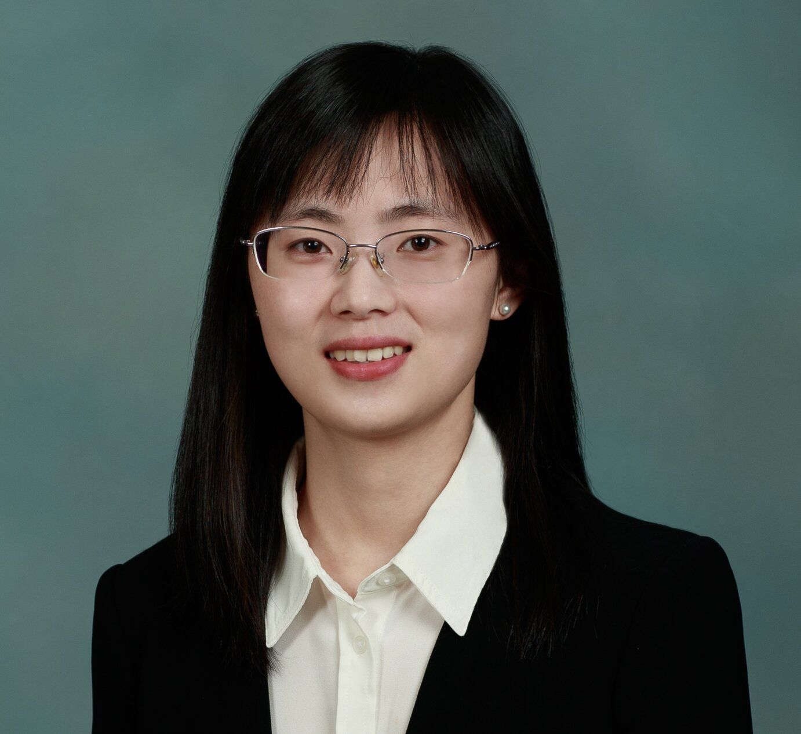
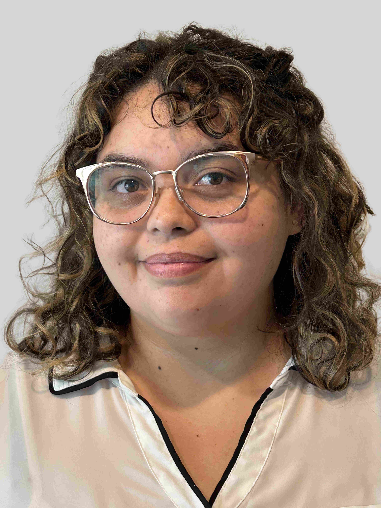
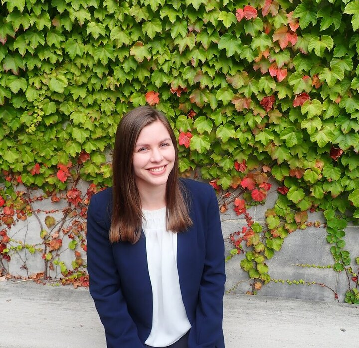
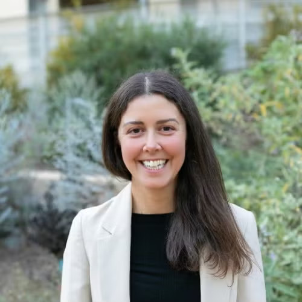
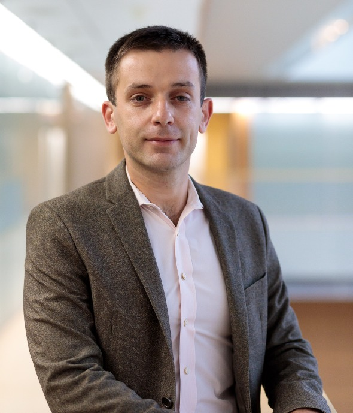
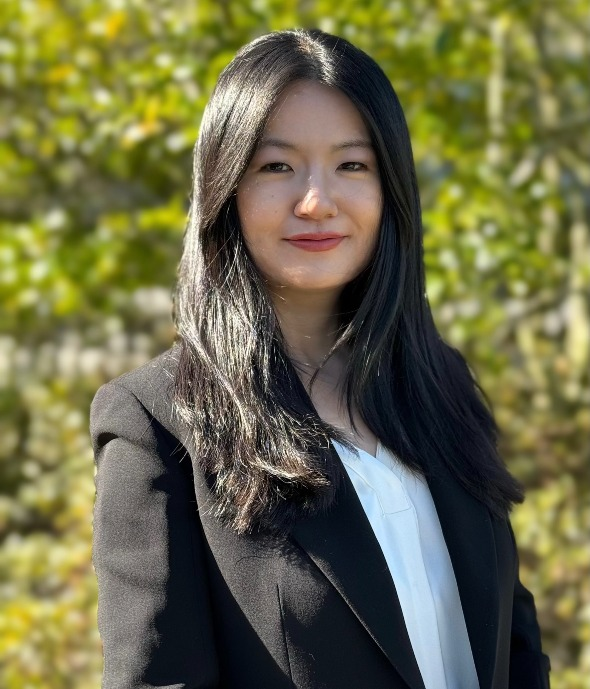

SEEDSConference 2025
January 8-11, 2025
University of Southern California, Los Angeles (CA)
University of Southern California, Los Angeles (CA)
The SEEDS 2025 conference will bring together researchers in statistics, data science, and business research from academia and industry in an engaging environment, aiming to start new collaborations, explore fresh research ideas, and help keep higher education offerings current and relevant in the modern age of statistics and artificial intelligence.
When: January 8-11, 2025.
Where: Marshall School of Business, University of Southern California, Los Angeles (CA).
Accommodation: Los Angeles offers many convenient hotel options. The closest option to the conference venue is the USC Hotel. Further, several hotels in Downtown LA offer USC Corporate rates for guest of the University, subject to room availability.
Meals: The registration includes breakfast, lunch, and snacks on the conference days, as well as the conference dinner. Additional guests can purchase a separate dinner ticket through the registration website.
Wi-Fi: Two visitor Wi-Fi networks are available: USC Guest Wireless (no authentication required) and Eduroam (requires authentication).
The conference will feature:
We welcome submissions for the Contributed Poster Session at SEEDS 2025. Student presenters will also be eligible for poster awards.
To participate, please submit your poster title and abstract via this form and notify the SEEDS organizers by email at seeds.conference@marshall.usc.edu no later than December 31, 2024.
Information for Poster Presenters
Maximum poster dimensions: 20 inches (width) × 30 inches (height).
|
(Harvard University) |
(University of Cambridge) |
(Princeton University) |
|
(Stanford University) |
(Databricks) |
(Amgen) |
|
(University of Warwick) |
(University of Edinburgh) |
(UC San Francisco) |
|
(New York University) |

(University of Tennessee, Knoxville) |
(UC Riverside) |
|
(Columbia University) |

(UC Irvine) |
(UC Los Angeles) |
|
(Williams College) |
(University of Michigan) |

(Rutgers University) |
|
(UC Irvine) |
(University of Pennsylvania) |
(University of Texas at Austin) |
|
(Technion) |
(Columbia University) |

(UC Los Angeles) |
|
(UC Davis) |
(University of Miami) |

(University of Wisconsin-Madison) |
|
(University of Warwick) |
(Purdue University) |
(UC Los Angeles) |
|
(Harvard University) |
(LinkedIn) |

(UC Irvine) |
The SEEDS 2025 conference is organized by the Statistics Group within the Data Sciences and Operations (DSO) Department of the University of Southern California, Marshall School of Business.
For further information, please contact the SEEDS organizers.
|
|

|

|

|

|

|

|

|
|
|

|

|

|